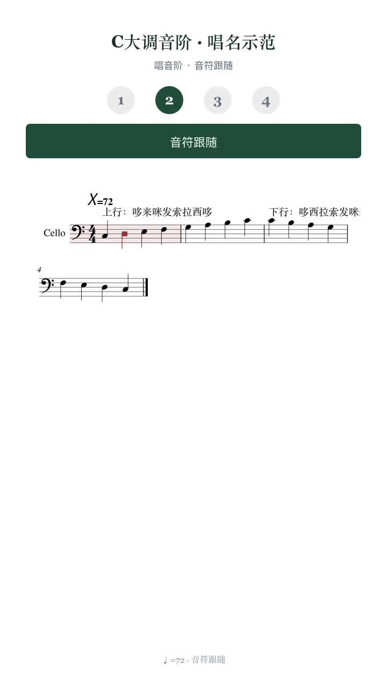
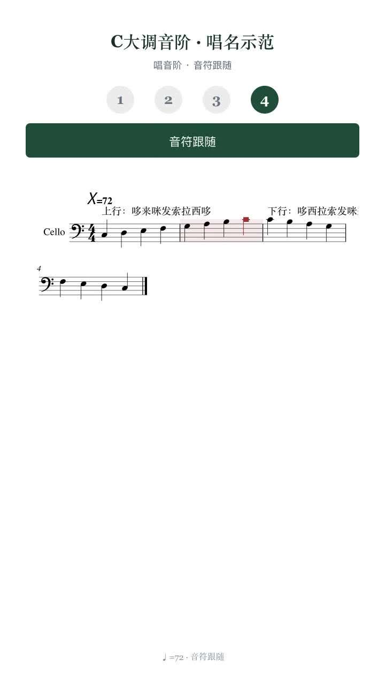
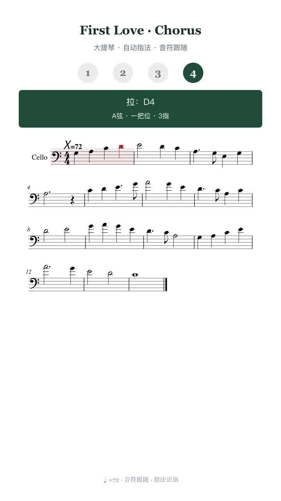
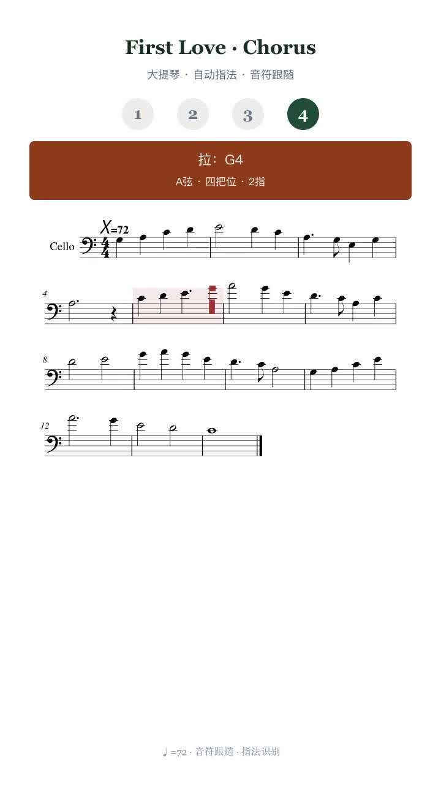
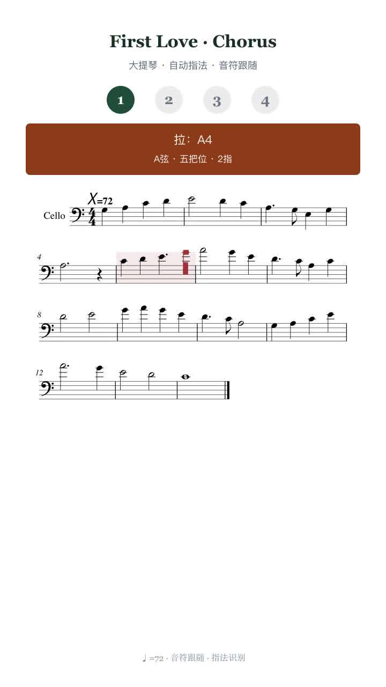

← 返回主页
琴谱成片配色
白谱纸 · 复古洋红跟谱 · 当前小节淡洋红底 · 把位：复古青 / 青蓝 / 复古洋红（与站点赛博色系统一）
谱纸底 #ffffff
跟谱高亮 #c23d6e
当前小节底 洋红10%
一把位 #2a6b72
中把 #3d6f8c
高把 #a03d5c

唱音阶 · 白底 + 当前小节洋红底 + 复古洋红音符

跟谱推进 · 洋红底随当前小节移动

大提琴 · 一把位复古青条

大提琴 · 高把复古洋红条

大提琴 · 高把／拇指复古洋红条